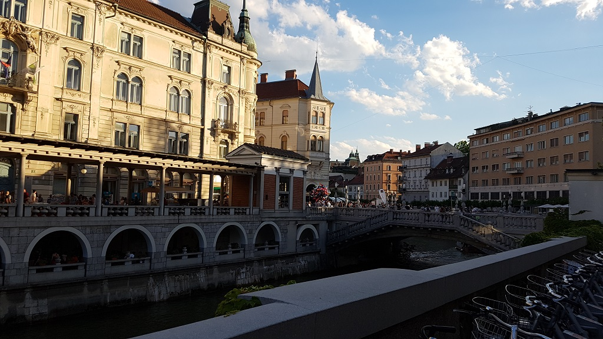

Würzburg, Germany. 2017 My Experimental Physics Experience

Kate and me at Crescent Beach - April 28, 2017
May 01, 01:10
Over the Atlantic
Well, I'm on my way to Frankfurt... I actually cannot believe my circumstances right now. I don't have any really interesting updates, but I've got nothing to do, and I have some time to write. One thing I do not have is my laptop charger. In the big hurry to get out the door this morning, I forgot that one at home. Last night I had a bunch of friends over, so it was not until this morning that I got my stuff together. Thanks for coming guys! And thanks for cleaning up Mom!
Something kind of interesting... By the time I had landed in Toronto, my plane to Frankfurt had begun boarding ten minutes prior. It's a good thing I'm not lugging around any slow-pokes with me because I had to jog across the entire Toronto airport. I just hope that the luggage guy was in as much of a hurry as I was.
I just finished watching the movie "Lion". Excellent movie! If you haven't seen it, do so. It's a true story about a boy who gets lost from his family in India. By the end of the movie I was a sobbing mess, which was very difficult to conceal when you have 50 strangers in a 6' radius. I am going to miss my family, my friends, and Kate all so much. But I am comforted by the fact that they and I are going to have a lot of fun this Summer!

A scanning tunneling microscope
May 04, 00:48
Babelfish Hostel
These last two days have lasted for what feels like ten. I have slept two nights in this hostel, and tonight should be my last. I have finally found a place to stay. I'll be living with two very kind students a few kilometers away from the University. It's on the 5th floor of an apartment that calls the ground floor "0", and the view is impeccable. The only kicker is that I'll need to buy a mattress for the bed frame that they have for me; but on the bright side, at least it'll be new!
I spent a lot of time searching for this place. My supervisor at the university was pretty concerned that I hadn't found a place to stay, so he kindly let my housing search consume most of my day at work. Now that I have less to worry about, I am looking forward to actually immersing myself in the experiment. I am working alongside a couple of graduate students that are investigating the crystallographic structure of Magnesium Oxide bonded on the surface of Ir(100). As of now I know very little about the physics pertaining to this experiment, and my job right now is just to change that. The students im working for are always teaching me new things. For instance, we spent a few hours on the first day going over the operation of the scanning tunnelling microscope (STM). After spending a while loading the sample, we were able to use the STM to image the individual atoms on the surface of the iridium. Really cool stuff!
I'm spending money pretty quickly. I have so far purchased food, a laptop charger, train and bus tickets, and 4 nights at the hostel. I've already gone through 200€. I'll (hopefully) be getting a German bank account tomorrow morning, which now that I think of it, can only accelerate my spending...
Marienberg Fortress
May 11, 20:59
Lengfeld
Well, pretty much everything has been sorted out. I have a bank account, a place to live, a mattress, my student card, and as of today, my own desktop computer at work. Germany is starting to feel like my home away from home.
There are many differences between Würzburg and Vancouver, which happen to generate much of my conversations with the locals who speak English. For example, the bus drivers here are tasked with navigating through windy side streets which are at many times wide enough for one car. The automated voices that announce the next stop are of children, and at the end of the ride no one thanks the driver. Come to think of it, it took me by surprise when I first heard someone shout "Thank you!" from the back of the bus.
I haven't mentioned this anywhere on this website, but I came to Würzburg with 4 of my friends from Engineering Physics. The other I met up with three of them, and they introduced me to a couple of other guys who study at UBC. The 6 of us walked up to this castle from the 16th century, went through a museum, and had a couple of beers. After that, I ended up at a house party where I learned that it is commonplace to bring beer or wine and share with everybody. It made for a very fun party!
A couple of times I have found myself in the small elevator in my apartment with an elderly German. Occasionally, they attempt to make conversation. So I just smile and giggle as if I know what they're saying, then at the end of the ride reply, "Ciao!".
Würzburg Residenz
May 17, 20:37
Lengfeld
I am really quite comfortable here. I'm very relaxed, yet not bored. I love where I live, which is quite fortunate because I've been spending a lot of time here the past couple days. However, I did spend a lot of the weekend outside. Some friends from UBC are working in Stuttgart, about an hour away by train, and they spent the weekend here in Würzburg. We went to visit the infamous Residenz, which was absolutely breathtaking. Wikipedia will do better justice than me, but the Residenz is a palace from the 18th century, almost completely rebuilt after it was destroyed in WWII. There was a lightning storm that night which made for a beautiful display to enjoy with my beer by the river.
Work is interesting. Today we waited for liquid nitrogen to boil out of the microscope, but since it is insanely thermally insulated, it took 7 hours for it to increase 2 degrees Celsius. In that time, I wrote a short program that simulates an elevator, so that I could test where the elevator should go when there is no one using it, such that there is minimal wait time. The result is that it is marginally better to send the elevator to the ground floor to wait for people to arrive. Also today, I was asked by a physics PHD student how I'd go about solving his ODE numerically. I explained how he could do it in Excel (only because he didn't have MATLAB). At the end of the day he thanked me and showed me how well it turned out.
Getting ready to go
May 22, 23:45
Lengfeld
A few updates! I have a couple of vacations coming up. My friends and I are going to Konstanz, a German city bordering Switzerland. Then a couple weeks later, I'm visiting Croatia. That's not even the biggest news. Last night I won 2 Euros in a poker tournament with a bunch of locals! The story starts with my buddy Tristan and I arranging to meet up in the city. Patric, my roommate, kindly offered to take me there on the back of his motorcycle. So we rip into town, I find Tristan, and we get wicked burgers and wicked beer at a little restaurant called Burger & Bier. After that we go to his place in Grombühl, which is pretty close to Lengfeld. There were a few guys starting a poker tournament and asked if we wanted to join.
I haven't even mentioned the biggest news! I have my own page on EP2's website. Work is getting real interesting. We are imaging individual atoms with the STM now and trying to decipher how they are arranged and how their spins are oriented. I would love to post some images on this page, but I am not sure if I'm allowed...
Tomorrow I am going out for a run. I have been telling myself to do so for the past week or so but I just get distracted and write code. I updated the video game that I made a while back, Swarm, which I've described in my Projects. Two or more people can now play over a server. This feature is still a little buggy, but if you want to try it out, and you're using a PC, you can download the latest version here. I digress. I am going to do the same run I did a few weeks ago. It's really nice it goes by this pond and through the grassy fields by the IKEA. Last time, I found my way to the pond just fine, but I somehow got lost returning home, and ended up running over 10 km in the hills of Lengfeld.
Last update. Patric's mother has offered to lend me her bicycle for the summer. She is wicked. She even does all my laundry!
On my way back from Erlabrunn
June 02, 08:28
Lengfeld
I have a lot to write about. My apologies for the late entry! I must write today because I won't get the chance to this weekend, and I don't want y'all worrying! I took the day off work today, but I forgot to turn my alarm off, so here I am, awake at 7:15. I took the day off work because today is the day that I hop on a train (at 14:??) with three of my buddies to go to Konstanz. Before then, at noon, I'm going to hit up Burger and Bier mit mein freund Patric, and hopefully pick up his mom's bike.
Last weekend, almost all of my friends from UBC went to Prague. I didn't go because a) I'm frugal, and b) I had a feeling I'd have a lot of fun in Würzburg. I was right about point b. Remember I said I would go for a run on May 23rd? Well, I didn't. So on the 24th (Father's Day in Germany) I went for a very long run to make up for it. I ran to Erlabrunn, which is 12 kilometers away from my house if you run through a series of foot paths. There are a couple of small lakes at Erlabrunn, so my roommates agreed to take the motorcycle and meet me there. I ran there with nothing but a hand drawn map, and my bus card. After 2 hours of mostly asking for directions, I finally arrived at the lakes. My roommates did shortly thereafter. I asked them to bring my phone, which I decided would be pretty useful to have on the run back. I ran through wheat fields, forests, and narrow European streets. It was great, but tiring!
I haven't written anything about this here, but we are getting a dog! My roommate found a dog online that hasn't had a home for the first year of her life. Her name is Laika and she's coming on the 11th of this month!
Last weekend, I also spent a bunch of time w/ some friends that I have made here. We drove to Erlabrunn, where we alternated between swimming and warming up in the hot sun. I asked my buddy Cedrick to sunscreen my back, but he only got my upper back, which became very clear the next day. But anyways, that night, after the lakes, the same group took me to a sort of underground punk concert. It was a really different atmosphere that I had little trouble enjoying. We were right up at the front of the stage, and as I'm being pushed around by friendly punks, I look up and see Cedrick crowd surfing. Later that night he said that if I got on the stage and looked into the crowd, there would be a group of people there ready, and they'd just hoist me into the air. He was so right.
The Friends of Gas (Left to Right: Rory, Jake, Me, and Tristan)
Look what I found
Me in a lot of pain
There's no place like home
June 07, 21:45
Lengfeld
I found out that getting sick feels the same in Germany, but getting sunburnt does not. Last weekend hosted my trip to Konstanz. Rory Cochrane, Tristan Ford, and Jake Goddard all deserve a huge shout out for making the best of the worst and being there for me when I really needed them.
Before I start with the trip, I should mention that I made a card game the other day, and just before I had to leave, I was wasting time writing the rules. I had almost no time to pack, but luckily I remembered everything. So the 5 hour train ride to Konstanz goes very smoothly (literaly, the train was silent), and I can already tell that my buddies and I are going to have a great time. When we get there its already about 21:00, and all we have time to do is go to a not so great club, and get lost on the way home.
The next day, we got up and rented a canoe for a few hours. We paddled for about an hour and a half to this wonderful little restaurant, where I had possibly the best fish of my life. After a beer and a swim, we then hopped back in the canoe and made our way back, which I should mention was down a river that divided Germany from Switzerland. By the time we got back to our hostel, we noticed that we all got a decent amount of sun. We also noticed that we had four new roommates, who were all very cool and went out with us that night. They joined us for a drinking game at the hostel, a couple games of pool at a bar, and a nice sit by the moonlit river.
The next day we went into town and saw Konstanz's equivalent of Stanley Park. It was really lovely. I wish I remember more of what we did on this day, but sadly I cannot. I think there was just too much that happened the next day to keep it all in my head.
So the next day, we followed through with our spontaneous plan to go to Switzerland. There is technically a border to cross because Switzerland is not in the European Union, but no one was within a kilometer to prevent us from walking ten steps from a German street, to a Swiss street. After hanging out in Switzerland for a bit, we had two hours until our train back to Würzburg. We made our way back to Konstanz, and on our way there, my shoulder started getting annoyingly itchy. After ten minutes, it was painfully itchy. By the time we had gotten into a familiar restaurant in Konstanz, my whole back was itchy as well. I excused myself and hurried off to the washroom were I was able to take my shirt off and pour water on myself. I had a burning itchy pain at this point and the water was only making it worse. I put my shirt back on, ran out to where my friends were sitting and told them how much pain I was in and bent down so they could scratch my back. I made enough of a commotion to attract a very nice lady who helped handle the situation very well. She brought ice which immediately soothed the spot where she applied it on my back. She got me to lie down on a bench where some old guy was sitting, and got Jake to call the paramedics. When the ambulance came, they asked me some questions, took my shirt off again in the middle of the restaurant, and helped me to the ambulance. I don't know why, but they took the ice away... My whole body was shaking due to the pain that that had caused. Finally after they realized that spraying alcohol on my back wasn't working, they reapplied ice, and drove me to the hospital. I could bare the pain now that there was ice on my back, and luckily, for the next four hours as I waited to see a doctor, everything slowly started to feel better. The doctor comes in, and looks very annoyed as she says to me, "You have a sunburn and there's nothing I can do". That's basically how my story with her ends. She gives me some pain killers, and sends me out the door. To my surprise, Rory, Tristan, and Jake are waiting for me in the waiting room! This is about 3 hours after our train left. I was feeling well enough to walk without the ice, and so we all walked around trying to find Wi-Fi so that we could book a trip home. We found a night bus that went from 23:40 to 11:00 the next day. Since it was only about 16:00 at this point, we had a lot of unexpected time to kill. We got dinner, and met a traveler of Europe who called himself "Me High", then waited for our bus. I found out then that I had gotten what's called Hell's Itch.
The next morning we got off the bus, I went home, found a ton of feathers in my flat, fell asleep immediately, and woke up with a cold. I've had one additional sleep since then and now I'm feeling pretty fine. What a weekend.
Alex using his arms while he has them
June 15, 13:09
Slovenia / Croatia
As promised, we got our dog! I don't have any suitable pictures of her so the next best thing is this smiley picture of Alex before he broke his arm and sprained his other wrist. I'll get to that, but first I will describe what it's like living with my new flatmate, Laika. She is one year old, rescued from the streets of Italy found half starved to death. I have been told that there is an abundance of stray dogs in Italy, and there are organizations even in Germany that help cope with this issue by finding the dogs owners. They found Oana, my roommate, and so now we are raising Laika until potentially a more permanent family wants to raise her. I should add that Patric's mother has expressed interest in this, but only until after we potty train her.
Here's where I introduce Alex. Last weekend, I went to a music festival with some friends who I met through my roommates, and their friend Alex. The festival was really nice. We camped there for two nights, which I would say was the best part of the whole experience. There was so much noise around the campground all day and all night. Both nights I slept in my tent with nothing between me and the hard packed grass but a sleeping bag. There was a lot of booze, and with that a lot of people who were very interested in talking to me. I met so many different people, and every single one of them celebrated with me the fact that we didn't share a common culture or first language. All over the camping ground, people (who I didn't even know) would yell out at me, "Canada!"
The music was predominantly rock, and it was pretty exciting. Of course for every band that played there was a group of people pushing each other around for the sheer thrill of it. On the second day of the festival, Alex was pushed out of one of these mosh pits, and broke his arm. We had no idea that he left the festival immediately after the incident, and just assumed that he had met up with some other people. I found out the next morning that Alex was in the hospital, and so since the festival was over anyways, it was a no-brainer to pack up and head over to him. We played half a game of Friends of Gas. It was a great opportunity to learn which rules needed to be refined, and I have made the game as perfect as it's going to get.
Work is getting cool! We've collected seemingly contradictory data, and we've been trying to wrap our heads around how we could possibly be seeing what we are seeing. My day consists of theorizing, and a lot of preparing samples for the microscope. Indeed, this coming week, I will be left on my own to do the experiments and figure everything out for myself.
So I'm on a bus that just crossed over the border from Slovenia to Croatia. My friend Katelyn and I took a ride share to Stuttgart, where ten UBC students and I caught our bus at 22:30 last night. I spent the night sound asleep dreaming about work, and the morning we spent a short time hanging out and eating cake in Bled, Slovenia. I met a guy on the bus named Pradeep, and I am thrilled that he will be rooming with me, the others from our Konstanz trip, and our friend Logan while we stay in Zagreb, Croatia. I can already tell this will be an awesome experience.
Plitvice Lakes National Park, Croatia
Ljubljana, Slovenia
Laika
June 25, 01:35
Lengfeld
I'll pick up just shortly after where I left off. That night, after we had arrived in Zagreb, we enjoyed many drinks at the hostel we were staying at, and went out to see what the nightlife was like in Croatia. From what I remember, it was a good time! Jake and I left the group a little early to head back to the hostel, which was probably the best decision that we could have made at the time. We were relatively well rested for the visit to the national park in the morning.
The park was amazing. It had so much to offer. There were waterfalls, caves, swamps, and forests. The water was incredibly clear and blue, but we were devastated to learn that swimming was prohibited. This did not deter us from seeking out a discrete location where we could take a quick dip. With only an hour or so left before we had to make our way back to Zagreb, three of my buddies and I decided it was as good of a time as ever to hop in the lake. I have no idea how, but I guess there was just enough noise and nudity to attract the attention of our friend from across the lake, who yelled at the top of their lungs, "Ryan, get out of the lake!" Scared that we would get caught by someone who had more authority, we hurried out of the water and headed back to the bus. It was definitely the highlight of Croatia, as I got everything I'd hoped for from the Plitvice lakes.
After another night in Zagreb, we made our way over to Ljubljana, Slovenia (try saying that ten times fast). We had a whole day to do whatever we want then the bus was to make its way back to Munich at around midnight. The culture in Ljubljana was so vibrant. There was music everywhere, people everywhere, a wine festival that spanned pretty much everywhere, and really good food everywhere. My friends and I found this one amazing white wine that was selling for 5 euros per bottle. We all had at least one to ourselves as we sat and talked by the river. I bought myself an ice-cream; waffle flavour on a chocolate waffle cone. After one bite, I knew that this was the best ice-cream cone that I'd ever had in my whole life, and so I said exactly that to my friends. A short while later, I was walking back from the washroom, and I passed by this guy who was eating what looked like the same ice-cream flavour. No word of a lie, he turns to his friend, and says, "This is the best ice-cream cone I've ever had in my whole life." I immediately introduced myself to him, and he confirmed that he was indeed eating the waffle flavour. He was from Toronto, so we start talking and I bring him and his buddy over to our group. We celebrated Slovenia with more wine and a wicked dinner.
The next day, in Würzburg, it's time for me to independently carry out all of my experiments for the week. I merely touch the microscope, and a part of the linear transfer mechanism comes loose and falls into the bottom of the preparation chamber. The prep chamber is an ultra-high vacuum (10-11 mbar), so in order to fix it, we had to bring it to atmospheric pressure. That was the easy part. The hard part is getting it back down to 10-11 mbar. It took all week, and I had absolutely nothing to do.
I have spent a lot of time this week with my friends Cedrick and Joni. They love my card game, and so we played it again with Alex and their new flatmate Roby. We had a couple of barbecues, went to Erlabrunn yesterday, and now today they're going to show me the skate park here in Würzburg. Cedrick has a skateboard so I'm going to see if I can teach them a few tricks.
Contact: ryancotsakis@gmail.com